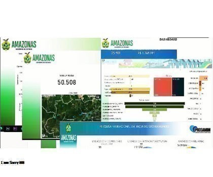
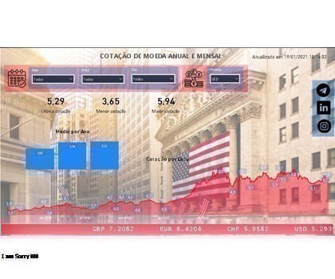
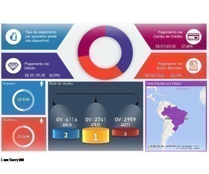
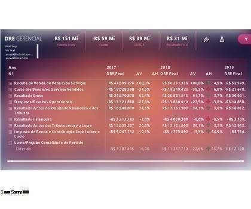
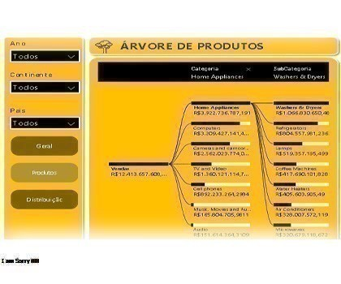
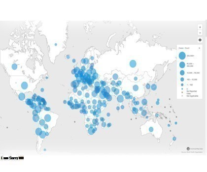
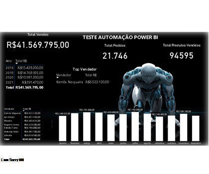

Business Intelligence
O business intelligence (BI) combina análise empresarial, mineração de dados, visualização de dados, ferramentas/infraestrutura de dados e práticas recomendadas para ajudar a sua organizações a tomar decisões impulsionadas por dados. Na prática, você sabe que tem o business intelligence moderno quando possui uma visão abrangente dos dados da sua organização e usa esses dados para gerar mudanças positivas, eliminar a ineficiência e se adaptar rapidamente às mudanças no mercado ou na cadeia de fornecimento na palma da sua mão.

Dashboard Governamentais, para análises de dados corporativos onde tem tornado uma ação cada vez mais necessária para os gestores e tomadores de decisão, nas autarquias, secretarias.

O web scraping (raspagem de rede, em tradução livre), também conhecido como extração de dados da web, é o nome dado ao processo de coleta de dados estruturados da web de maneira automatizada.

Dashboard com Geolocalização nos permite apresentar informações através de elementos visuais como, mapas, gráficos e indicadores de forma simples e rápida.

Dashboard com DRE (Demonstração do Resultado do Exercício) é um resumo das operações financeiras da empresa em um determinado período de tempo para deixar claro se ela teve lucro ou prejuízo.

Dash explodindo arvores de produtos com a base da contabilidade, motrando o plano de conta onde e um pilar que sustenta todas as operações e as tomadas de decisão.


{kind=link}
{kind=link}
{kind=link}
{kind=link}
{kind=link}
O processo básico de raspagem de rede faz isso em uma escala microscópica e com automação inteligente, para extrair milhões de dados de páginas da internet.

{kind=link}
Dashboard integrando a geocodificação e os relatórios analíticos. Para a implementação da versão final do mapa foi utilizado além do plugin Leaflet, os dados extraídos do Portal de Dados Abertos.

{kind=link}
Dash automatizado nas operações contábeis aumentando a performance, a qualidade de entrega do time, a segurança nos processos e o aumento do ticket médio, destravando rotinas, impactando diretamente em toda estrutura.
10+12
Apaixonado por dados e tecnologia, possuo experiência de mais de 10 anos de trabalho autonômo diário para fins acadêmicos, profissionais e pessoais. Atividades práticas como coleta, preparação e análise automatizada de dados, visualizações profissionais, desenvolvimento de aplicações web e Dashboards, modelagem estatística, Machine Learning, Linux, banco de dados e mecanismos de busca fazem parte do meu dia a dia.
2k
Clientes rotativos
40
Consultorias
12
Anos de Distrito
05
Anos como Servidor Público
Curriculum Vitae
Jan Kleber Farias Sayd
Download da versão em pdf aqui
Apaixonado por dados e tecnologia, possuo experiência de mais de 10 anos de trabalho diário com Ciência de Dados para fins acadêmicos, profissionais e pessoais. Atividades práticas como coleta, preparação e análise automatizada de dados, visualizações profissionais, desenvolvimento de aplicações web e Dashboards, modelagem estatística, Machine Learning, Linux, banco de dados e mecanismos de busca fazem parte do meu dia a dia.
Atualmente trabalho como funcionário público na área de Data Science, e gerência de informática, onde meu objetivo é aplicar conhecimentos de estatística e ciência de dados para desenvolvimento e implementação de modelos de Machine Learning para o estado.
Formado em Ciência de Dados e cursando MBA em Data Science, Adminstração de Banco de Dados e Perícia Forense Computacional, tenho participado de forma mais ativa no Kaggle (Kaggle Master) e faço cursos online constantemente tanto sobre minha área de atuação quanto sobre assuntos diversos como desenvolvimento pessoal, empreendedorismo, performance, criatividade e inovação. Me considero um eterno aprendiz.
Especialidades:
Formação Acadêmica
Respostas Rápidas
O que são redes neurais artificiais
As redes neurais artificiais representam um novo paradigma metodológico no campo da Inteligência Artificial, ou seja, no desenvolvimento de sistemas computacionais capazes de imitar tarefas intelectuais complexas, tais como a resolução de problemas, o reconhecimento e classificação de padrões, os processos indutivos e dedutivos, etc...Tipos de conjuntos de dados em ciência de dados
Para tomar qualquer decisão sobre como lidar com um conjunto de dados, é preciso entender com qual tipo de dados você está trabalhando, antes de tratar especificamente de cada tipo de dataset, como dimensionalidade, esparsidade e resolução, que são características gerais dos datasets. Nos três tipos de conjuntos de dados: dados de registro (record data), dados baseados em gráficos (graph-based data) e dados ordenados (ordered data)...
Tarefas na mineração de Dados
Na mineração de dados, são definidas as tarefas e os algorítimos que serão utilizados de acordo com os objetivos do estudo, a fim de obter uma resposta para o problema. As tarefas possíveis de um algorítmo de extração de padrões podem ser agrupadas em atividades preditivas e descritivas. Os dois principais tipos de tarefas para predição são a classificação e a regressão. A classificação consiste na predição de uma variável categórica, ou seja, descobrir uma função que mapeie um conjunto de registros em um conjunto de variáveis predefinidas, denominadas classes...
Qualidade de dados e a sua importância
Para que todo e qualquer dado tenha sua parcela de confiabilidade e precisão necessários para um determinado negócio, é que preciso que haja um direcionamento correto das atividades empresariais. Além disso, é preciso que esses dados sejam precisos, aderentes e consistentes de acordo com as regras do nicho de mercado atuante. Ao contrários do que alguns acreditam, a qualidade de dados não é somente direcionada a limpeza e padronização dos dados na construção de uma solução em BI. É importante ressaltar que ela vai muito além de somente ajustar dados e pode também ser relacionada com os processos de negócios...
O que é ciência de dados?
A ciência de dados (ou data science, em inglês) é uma área relativamente nova no mundo dos negócios, essencial para as empresas que buscam vantagem competitiva. É com o trabalho realizado nessa área, que utiliza padrões passados como base, que se torna possível enxergar o contexto no qual a empresa está inserida e até prever acontecimentos futuros. Tem como principais objetivos otimizar processos, gerar produtos inovadores e resolver problemas de negócios, utilizando diversas disciplinas, como estatística, matemática, computação e, principalmente, conhecimento de negócio....
O que é análise de dados?
A análise de dados, trabalha com os resultados, essa área faz a análise inteligente do grande volume de dados gerado pelas empresas. Seu principal objetivo é encontrar correlações significativas entre os dados, ou seja, ter insights e transformá-los em algo que possa ser facilmente visualizado e utilizado no dia a dia dos negócios...
O que e Bases de Dados ?
Bases de Dados são frequentemente confundidas com Bancos de Dados. Enquanto os últimos se referem a um arquivo de computador, aberto em Excel ou outro programa compatível, para registrar dados obtidos numa pesquisa (como idade ou nível de sintomas de depressão, por exemplo), os primeiros se tratam de Repositórios de Publicações Científicas. Esses repositórios estão vinculados somente a revistas científicas – o que significa dizer que as revistas científicas vinculadas aos repositórios estão na verdade Indexadas a eles. Uma revista científica só é indexada a uma Base de Dados Científica se for considerada de qualidade e de credibilidade. Sendo assim, ao fazermos uma pesquisa em uma Base de Dados (Pubmed/ Medline, Scielo, Bireme, PsychINFO, etc.), podemos ter a certeza de que estamos localizando artigos científicos, os quais, via de regra, são normalmente revisados por, pelo menos, dois pareceristas (revisores)...
O que e o engenheiro de software ?
Um engenheiro de software constrói aplicativos e sistemas. Os desenvolvedores estarão envolvidos em todas as etapas deste processo, desde o design e até a escrita do código, teste e revisão. Eles estão criando os produtos que criam os dados. A engenharia de software é a mais antiga dessas três funções, e estabeleceu metodologias e conjuntos de ferramentas. O trabalho inclui: Desenvolvimento de Frontend e Backend Aplicativos Web Aplicativos Móveis Desenvolvimento do Sistema Operacional Design de Software...
O que e o engenheiro de dados ?
Um engenheiro de dados constrói sistemas que consolidam, armazenam e recuperam dados das várias aplicações e sistemas criados pelos engenheiros de software. A engenharia de dados surgiu como um conjunto de habilidades de nicho dentro da engenharia de software. 40% de todos os engenheiros de dados trabalhavam anteriormente como engenheiro de software, tornando este o caminho de carreira o mais comum para engenheiros de dados. O trabalho inclui: Estruturas de Dados Avançados Computação Distribuída Programação Simultânea Conhecimento de ferramentas novas e emergentes: Hadoop, Spark, Kafka, Hive, etc. Construindo ETL / Pipelines de Dados...
Entre em contato
Que falar comigo ?, basta preencher o formulário de contato e responderei em breve..